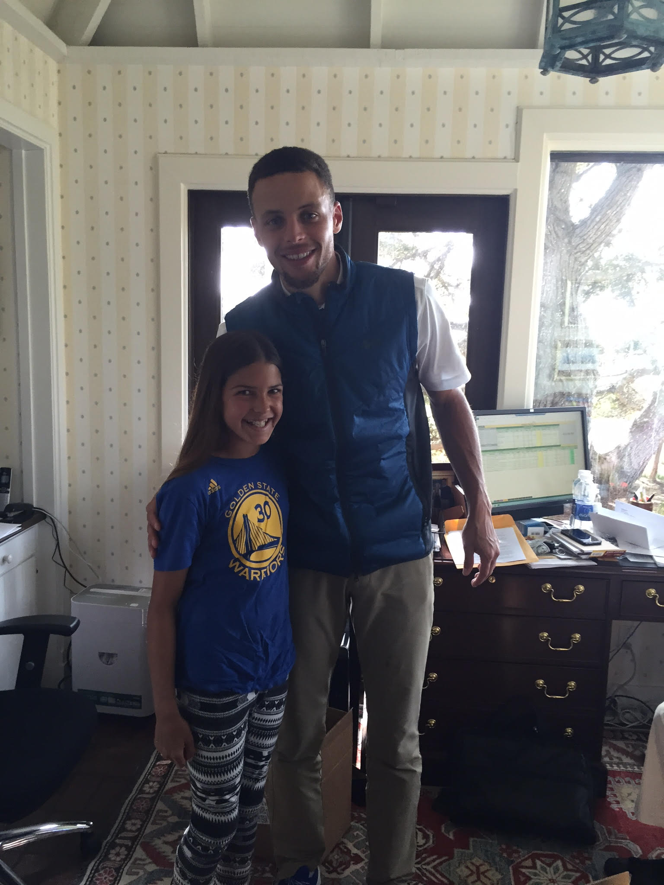

My Hero

My hero is Stephen Curry. He is the point guard for the Golden State Warriors of the National Basketball Association. He was drafted in 2009 as the 7th pick in the first round from Davidson college. He is 6 foot 3 inches and 32 years old. Steph has a wife(Ayesha), two daughters (Riley)(Ryan), and a son(Canon). Curry is known around the globe as one of the greatet shooters of all time. His most outstanding skills include his stellar three point shooting and ball handling.
I have selected Steph Curry as my hero because I have looked up to him as a role model throughout my basketball career. When I was younger I was usally one of the shortest players on the court. I had to shoot from father away because I would get blocked if inside the paint. Steph seems to be a little similar to me as he is not very tall and likes to shoot the 3. I love watching him on tv because he looks like he is having so much fun playing the game. He has changed the game of basketball as many players across the world want to shoot threes like Stephen Curry.
Click here to read about the underrated Steph Curry
Click here to return to my home page.